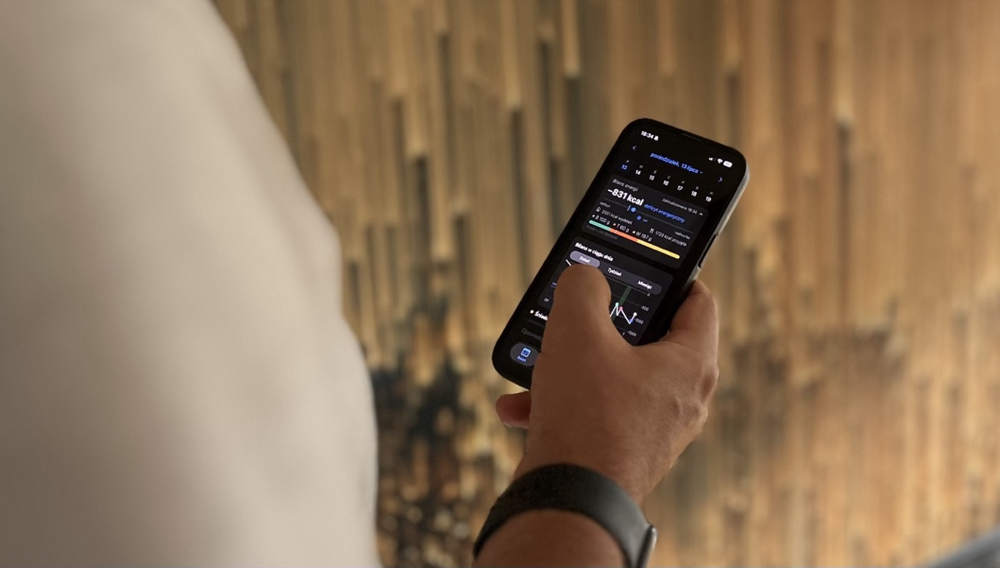

Lokalne potrawy — po Twojemu.
Zaloguj to, co naprawdę jesz — od paelli po schabowego.


Zapisz przepis — własny albo z rolki — dopasuj go zamiennikiem pod swój cel i zobacz, jak wpisuje się w Twój dzień.
W App Store i Google Play

Zaloguj to, co naprawdę jesz — od paelli po schabowego.
Napisz albo nagraj głosówkę. Im dokładniej opiszesz, tym dokładniejszy wynik: z ilościami Fiteo liczy najprecyzyjniej, a bez nich przyjmie typową porcję i pokaże ją do poprawienia.
Spalone z aktywności wchodzą do bilansu z Apple Health albo Health Connect — automatycznie, bez wpisywania.
Udostępnij rolkę do Fiteo albo wklej link — składniki, kroki i makro na porcję. Potem podmień dowolny składnik pod swój cel.
Własny przepis albo rolka z Instagrama, TikToka czy YouTube — ze składnikami, krokami i makro.
Mniej kalorii, więcej białka, bez laktozy, wege, taniej — albo opisz własnymi słowami.
Posiłek trafia do Twojego dnia: przyjęte kontra spalone, z celem na dziś.
Gdy podasz ilość, mediana błędu to 1%, a 94% potraw mieści się w ±10% wartości z danych referencyjnych. Pokazujemy też, gdzie Fiteo się myli.
Nielimitowane szacowanie AI, 20 importów przepisów miesięcznie i zamienniki składników.
/ miesiąc
≈64% taniej niż co miesiąc
7 dni za darmo na start — zrezygnuj kiedy chcesz.